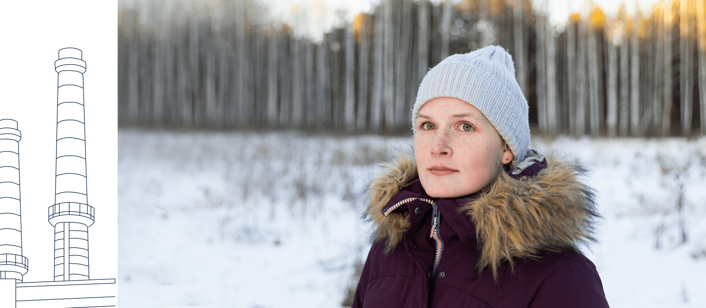

Александра Валерьевна Зюзёва
Александра Валерьевна Зюзёва. «Когда видишь, что твой проект реализован, — испытываешь гордость»
 Александра Валерьевна Зюзёва
Александра Валерьевна Зюзёва
Дата рождения: 24.12.1997. Закончила электрофак УрФУ (Уральский федеральный университет — прим.). Работает в проектном отделе инженером-конструктором третьей категории. Побеждала в конкурсе World Skills.
Родные отзываются об Александре как об очень ответственном человеке. А еще она — самый эмоциональный герой этой истории. В один из дней работы над проектом была запланирована фотосъемка членов семьи Зюзёвых. Собрать удалось порядка 30 человек. На первом плане должны были сидеть герои проекта. Саша поначалу категорически отказывалась занимать свое место. «Как я буду сидеть, если дедушки стоять будут?» А там действительно были и пожилые люди. В итоге Александру, конечно, уговорили. Возможно, такое сочетание ответственности, уважения к старшим и в то же время эмоциональной непосредственности и делает Сашу личностью неординарной.


 Александра
Александра Зюзёва
Было время, когда я не хотела идти учиться на электрика. Почему все в семье должны быть электриками? А потом задумалась. Все-таки это не такая работа, что ты постоянно будешь только за компьютером сидеть или только бегать всюду. Будет разнообразие. Поступила в итоге на электрофак в УрФУ и ни разу не пожалела.
 Валерий
Валерий Зюзёв
Одна дочка, Анна, сразу пошла по семейным стопам. А Саша заявила, что будет решать сама. Сразу ей сказал: «Не хочешь идти в электрики, выбирай место для учебы самостоятельно, чтобы потом не было вопросов». Подали документы в два-три вуза. В итоге она решила на электрофак поступать. Может, свою роль сыграло и то, что там дядя Толя работал.
Александра Зюзёва
Мои одногруппники заранее знали, что не пойдут работать по специальности, а мне, наоборот, интересно было. Я и практику проходила монтажником, мне очень нравилось. Сидишь, собираешь кабели по схемам, все соединяешь, прикручиваешь, привинчиваешь. Получала от этого удовольствие.
 Описание фотографии
Описание фотографии
 Анатолий
Анатолий Зюзёв
С моей стороны не было никакой агитации. Довольно неожиданно, что Александра пришла к нам на кафедру. По-моему, она сразу в своей группе старостой была назначена. Строила мальчишек только так. Никакие возражения не принимались. Я у нее был научным руководителем, мы вместе хорошо поработали. Как-то даже грустно стало, когда она закончила. Для меня это был, можно сказать, определенный жизненный рубеж.
Валерий Зюзёв
Она у дяди Толи лучшей ученицей была! Ездила с ним на Игры мастеров в Москву и заняла там первое место. И это в электромонтаже среди мальчиков! Казусный факт. Вот такая Александра.
Анатолий Зюзёв
Тогда в России стали набирать силу конкурсы мастерства World Skills. Выделялись деньги на проведение таких конкурсов по самым разным направлениям. В нашем случае это была промышленная автоматика. Конкурс довольно серьезный. Саша прошла в университете предварительный отбор и поехала в Москву. Я как руководитель был к ней приставлен. Всего — пять рабочих мест. Кроме Александры — все парни. Ставится шкаф автоматики, чуть поменьше холодильника. Его надо смонтировать. Два дня они мучились на монтаже. А там работа с болгаркой — окна вырезать под дисплей, много надо было сверлить для установки аппаратов, лампочек, кнопочек. Далее собственно внутри шкафа монтаж, затем проводной монтаж. Потом — тестовые задания, поиск неисправностей и программирование. И действительно, все кончилось тем, что первое место поделили Сашка и парень из Москвы.
Валерий Зюзёв
После учебы Саша у нас здесь устроилась. Сама пришла. Ее сразу приняли, не отказали. Конструктор — усидчивая работа. Главное, что образование ей позволяет. Александра очень деловая, грамотная. Цену себе знает. Всегда везде первая.
 Александра
Александра Зюзёва
Я училась по специальности «Электроприводы и автоматизация промышленных установок», но работаю сейчас больше с электроснабжением в проектно-конструкторском отделе. Когда пришла устраиваться на завод, оказалось, что конкретно по моей специальности вакансий нет, но была вакансия в проектном отделе. Нужно сидеть за компьютером и периодически выходить на объекты по вопросам электроснабжения. Либо заниматься разводкой проводов в помещениях.
В свое время я думала, а не перебор ли в этой семье с электриками. А теперь считаю, что важна любая работа. В нашей семье никто не начинал сразу с инженера, не сразу занимал какие-то должности. Начинали с электрики, были электромонтерами. Мне эта работа даже больше нравится, но я знаю, что на производстве это очень тяжело.
Когда у меня спрашивают, чем я конкретно занимаюсь, привожу наглядный пример. Вот вы приходите в помещение, щелкаете выключатель — свет загорелся. Вот это мы нарисовали. Есть некий объект, необходимо его «запитать», распределить подачу электроэнергии от каких-то щитков и далее по помещению.
Мне моя работа нравится. Когда выходишь на объект и смотришь, как что идет, это очень интересно. Плюс я человек социальный, и моя работа предполагает общение с людьми. На новом объекте нет-нет да поговоришь с дежурным электриком или с каким-то человеком, ответственным за объект. Еще нравится узнавать, какие сейчас ставятся промышленные задачи и придумывать, что и как можно улучшить.
По разным причинам не все проекты получается воплотить в жизнь. Но когда видишь, что твой проект реализован, — испытываешь гордость. Работа и в быту помогает. Например, разводка электропитания в квартире, где мы живем с мужем и дочкой, — мой проект.
Если бы удаленно можно было работать не с таким большим объемом материала, я бы, может, работу с завода брала. Потому что иногда, когда сидишь в отпуске по уходу за ребенком, все равно хочется отвлечься от погремушек и игрушек.
Я обожаю вязать. Только не кофты и свитера какие-то — эти нужные вещи я не вяжу. Увлекаюсь амигуруми, игрушечками такими. Могу тыковку связать, снежиночки новогодние. Такие бесполезные, но очень приятные штучки.
Еще у нас все в семье занимаются спортом. Но если бегать, то для себя. Медленно, спокойно. Мы не спортсмены по факту, просто поддерживаем здоровый образ жизни. Бажовский пробег у нас проходит, и мы всегда всей семьей в нем участвуем. Точно так же и внуки у тети Тани — это даже не обсуждается.
Анатолий Зюзёв: Саша, конечно, посмелее отца. Сами понимаете, миллениалы, они такие. Валера более осмотрительный. Но есть у них одно общее качество. Если что, ни от Валерки, ни от Сашки не отвертишься. Оба настойчивые и очень дотошные.


 Татьяна
Татьяна Фоминых
Александра — это огонь. Валера все же более спокойный. При этом Саша, как и отец, очень ответственная. Наверное, ответственность — это их главная фамильная черта.


Татьяна Зюзёва 


Валерий Зюзёв